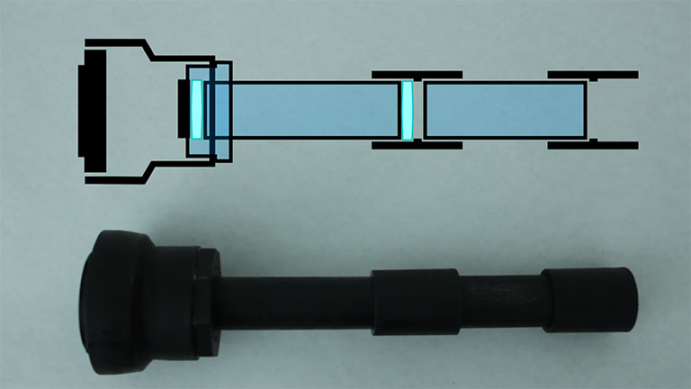

In this build, I create a DSLR microscope mount using jeweler's loupes and PVC pipe. The mount fits over the Trinocular port of the microscope since the lenses I had available were too large to fit inside the port. This causes some reflection on the edges of the image.
The following parts are used:

The extension tube mount and the 7mm tube is used to connect the PVC lens assembly to the camera. The mount is installed by heating up the 2" reducer with a heat gun.
The lens on camera side is 7X and the lens on the microscope side is 2X.
Calibration**
To determine the correct focal lengths, the image is first brought into focus in the eyepieces. I then adjusted the position of the lenses and the length of pipe until the image came into focus in the camera. The length of the front tube is approxomately 3.5" and the length of the back tube is roughly 4". In this build I used standard .75" couplers, but deep socket connectors are also available and would allow for more adjustability.
To get the full details of the build, watch the video.